IO624 Usage Notes
IO624 Usage Notes — Usage information about the I/O module
PSI5: Sensor-to-ECU Communication
The Peripheral Sensor Interface (PSI5) uses two unshielded wires for both power supply and data communication. The sensor data is transmitted by current modulation on the supply lines and the data are coded with Manchester coding.
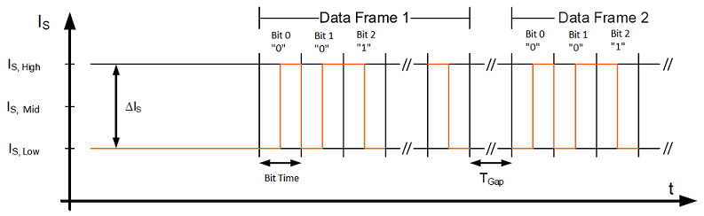
PSI5 provides synchronous and asynchronous data transmission and supports time-multiplexed multi-channel operation modes for sensor clusters.
In asynchronous operation mode, each sensor is connected to the ECU by two lines and transmits its data periodically. The timing and repetition rate of the data transmission is controlled by the sensor.
Synchronous operation mode allows communication timing control by the ECU. This mode is optional for point-to-point configurations but is mandatory for bus modes. Timing and access control are implemented using two different voltage levels generated by the ECU.
In the Setup block Channel X tab, a message appears in the PSI5 Data Frame section. Data Frame Duration + Time Gap displays the data frame duration plus a time gap (TGap). A minimum TGap longer than one maximum bit time is required between two successive data frames. Please bear this value in mind when you are creating your data frames.
PSI5: ECU-to-Sensor Communication
The data transmission period is initiated by a voltage synchronization signal from the ECU to the sensors (V2). After receiving the synchronization signal, each sensor starts transmitting its data.
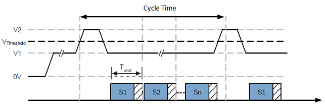
ECU-to-sensor data frames are applied in different ways for the two different bit coding methods in use: the Tooth Gap or Pulse Width method. To ensure safe data recognition, combined use of the bit coding method and the respective frame types of each method is not permitted. Refer to the documentation for the Peripheral Sensor Interface for Automotive Applications for more information.
Tooth Gap Method
A logical “1” is represented by the presence of a regular (“short”) sync signal (Signal Sustain Voltage (Vth) = V1 + 2.5[v] min., pw = 35 [μs] max.), and a logical “0” by the absence of the sync signal during the expected time window (Cycle Time) of the sync signal period. The voltage for a logical “0” must remain V1.
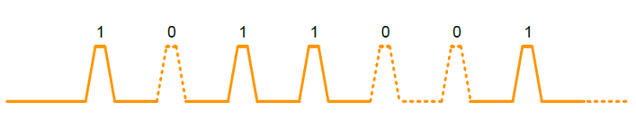
Pulse Width Method
A logical “0” is represented by the presence of the regular (“short”) sync signal (Signal Sustain Voltage (Vth) = V1 + 2.5[v] min., pw = 35 [μs] max.), and a logical “1” by a longer sync signal (Signal Sustain Voltage (Vth) = V1 + 2.5[v] min., pw = 62 [μs] max.).
Only synchronization pulses within the permitted time window are recognized.
Sync Signal Specification
Make sure that the sync signal meets the following specifications:
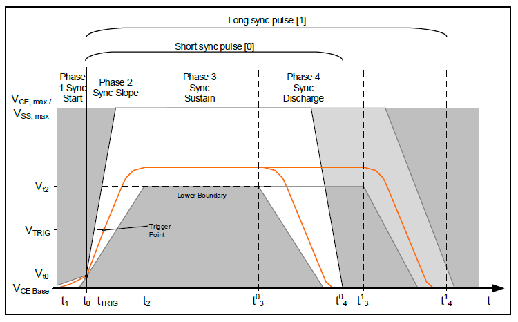
| Name | Symbol | Info | Min | Nom | Max | Unit |
|---|---|---|---|---|---|---|
| Sync slope reference voltage | Vt0 | Referenced to VCE, BASE | 0.5 | V | ||
| Sync signal sustain voltage | Vt2 | Reduced sync pulse; Referenced to VCE, BASE | 2.5 | V | ||
| Standard sync pulse; Referenced to VCE, BASE | 3.5 | |||||
| Reference time | t0 | Reference time base | 0 | μs | ||
| Sync signal earliest start | t1 | Delta current less than 2mA | -3 | μs | ||
| Sync signal sustain start | t2 | @Vt2 | 7 | μs | ||
| Sync slope rising slew rate | VSync, SR, rise | 0.43 | 1.5 | V/μs | ||
| Sync slope falling slew rate | VSync, SR, fall | -1.5 | V/μs | |||
| Sync signal sustain time | t03 | 16 | μs | |||
| t13 | 43 | μs | ||||
| Discharge time limit | t04 | 35 | μs | |||
| t14 | 62 | μs | ||||
| Start of first sensor data word | tSlot 1 Start | Tooth gap method | 44 | μs | ||
| Pulse width method | 71 | μs |
PSI5-A (Asynchronous)
PSI5-A describes a point-to-point connection for unidirectional, asynchronous data transmission. Each sensor is connected to the ECU by two wires. After switching on the power supply, the sensor starts transmitting data to the ECU periodically.
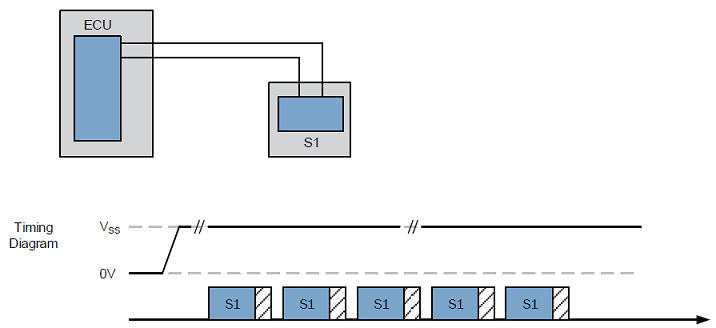
PSI5-U/P (Synchronous Universal/Parallel)
The synchronous operation modes work according to the TDMA (Time Division Multiple Access) method.
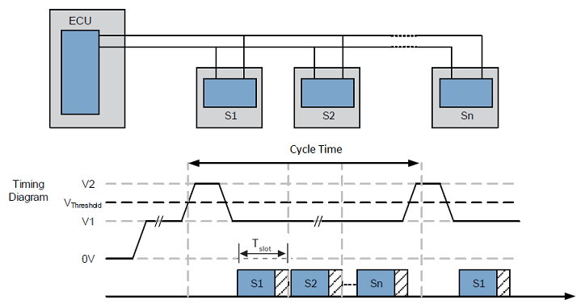
Basic PSI5 Bus Topology
The sensor data transmission is synchronized by the ECU using voltage modulation. Each data transmission period (Cycle time) is initiated by a voltage synchronization signal from the ECU to the sensors. After receiving the synchronization signal, each sensor starts transmitting its data with the time shift (Slot Delay) in the corresponding time slot.
PSI5-D (Synchronous Daisy Chain)
The PSI5-D operation mode works by synchronous data transmission of one or more sensors connected in a daisy chain configuration to a single interface of the transceiver within the ECU. The communication between ECU and sensors is bidirectional. The sensors must have allocated addresses during startup.
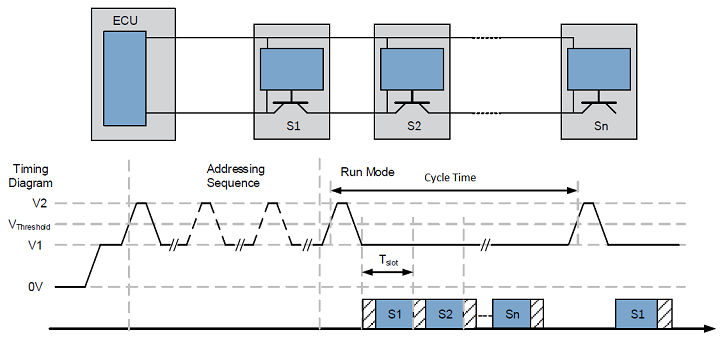
In daisy-chain configuration, the sensors have no fixed address and can be connected to each position on the bus. During startup, each sensor receives an individual address and then passes the supply voltage to the following sensor subsequently. The allocation of addresses is implemented using bidirectional communication from the ECU to the sensor using a specific sync signal pattern. Once the individual addresses have been allocated, the sensors start to transmit data in their corresponding time slots in the same way as specified in the PSI5-U/P bus topology.
A time gap of 8 [μs] is set at the end of the cycle time because the sync pulse slope can affect the last bit transmitted. A time gap of 24 [μs] is set at the beginning of the cycle time because the sync pulse will produce current ripples that can affect the first bit transmitted. Please bear in mind that the use of the total cycle time will be reduced by 32 [μs] due to the beginning and end time gap.
ECU-to-Sensor Communication with Tooth Gap Method
The Tooth Gap method is limited to the use of data frame formats 1–3. Frame format 1–3 is composed of 3 start bits, a data field, and a 3-bit CRC. The start condition for an ECU-to-sensor communication consists of either at least 5 consecutive logical zeros or at least 31 consecutive logical ones. The sensor responds with the standard sensor-to-ECU current communication in its corresponding time slot. This communication may be sent in data range format within the following two or three sync periods.
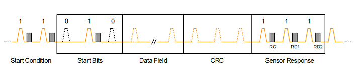
The data field in Frame 1–3 contains a 3-bit sensor address and a 3-bit function code (FC). For frames 2 and 3, the data field also contains RAdr and Data, the number of bits is:
Frame 2a "Long" (4-Bit Data Nibbles), 6-bit RAdr, and 4-bit Data.
Frame 2b "Long" (8-Bit Data Word), 2-bit RAdr, and 8-bit Data.
Frame 3 "XLong", 8-bit RAdr, and 8-bit Data.
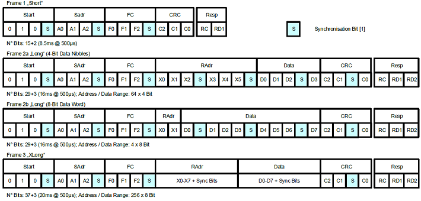
The Synchronization bits (logical “1”) are introduced from the ECU at each 4th-bit position to ensure differentiation between data content and start condition and to enable sensor synchronization when using the tooth gap method. This bit is used internally for the IO624 and is not added to the final output channel data in the Sync Pulses block.
ECU-to-Sensor Communication with Pulse Width Method
The Pulse Width method uses frame format 4. Frame format 4 is composed of 9 start bits, a data field, and a 6-bit CRC.

The Data field contains a 3-bit sensor address field, a configuration bit, and 20-bit data containing application-specific information. The Data Field output from the Sync Pulses block will contain the 20-bit data field.
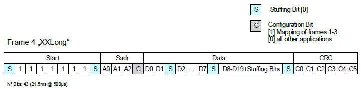
The Data field in Frame 4 can also be composed of all function codes and frame data content of frame formats 1–3 as described in the Tooth Gap method.
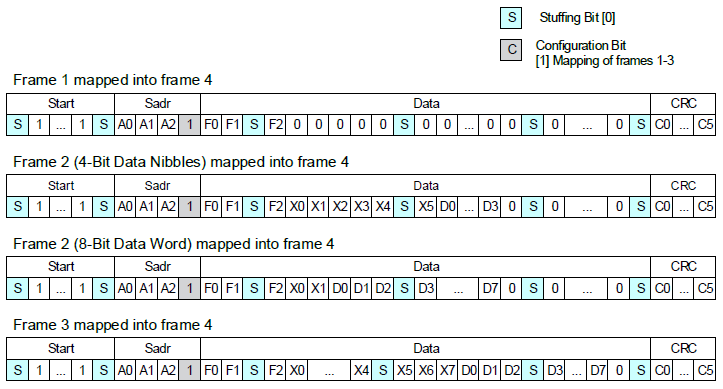
The Stuffing bits (logical “0”) are introduced from the ECU at each 7th-bit position (8-bit position for start region) to ensure differentiation between data content and frame start. The Stuffing and Configuration bits are used internally for the IO624 and are not added to the final output channel data in the Sync Pulses block.
Principle of Operation
ECU applies supply voltage to PSI5 module (power on)
Wait for supply settling time
ECU assigns sensor address for time slot “TSi” to the next sensor that has not yet received its configuration
Addressed sensor responds by sending its internal status (acknowledge or error) message and address confirmation. The sensor closes the daisy-chain switch to supply next sensor
Repeat steps 2, 3 and 4 until all sensor addresses have been successfully assigned (from TSn down to TS1)
ECU to send RUN broadcast instruction to start runtime mode
All sensors to send out their initialization data within their assigned timeslot
All sensors to send out "sensor_OK" messages
All sensors to send out their sensor data
PSI5-V (Variable Time Triggered Synchronous)
The Variable Time Triggered Synchronous operation mode works similarly to Synchronous mode.
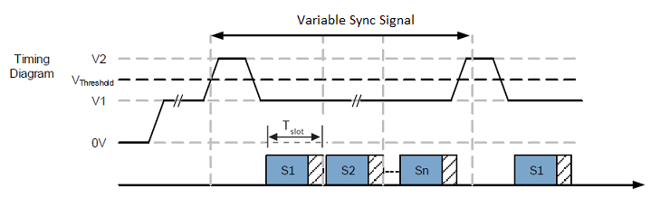
The sensor data transmission is synchronized by the ECU using Pulse Width method. Each data transmission is initiated by a voltage synchronization signal from the ECU to the sensors with variable delays. After receiving the synchronization signal, each sensor starts transmitting its data with the time shift (Slot Delay) in the corresponding time slot.
Wheel Speed Sensor Protocol
Standard 2-level wheel speed sensor with Square Wave “Speed Protocol"
For every gear tooth, a 14 mA rotation signal is sent. The pulse duration increases with lower rotation speed; this results in a 2-level encoding that is based on a duty cycle setting:
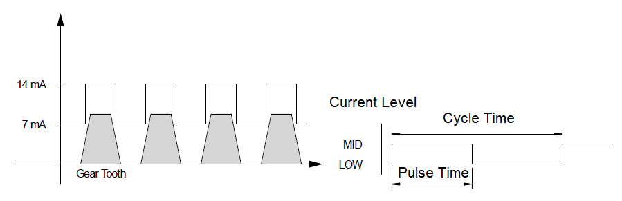
Speed Protocol / Duty Cycle Diagram
PWM
PWM Wheel Speed Sensors transmit additional information by varying the length of the speed pulses. PWM encoding is based on the Pulse Time parameter and all pulse widths are derived from this value. PWM-encoded 2-level sensors, with support for airgap warning (LR), assembly position (EL) and direction of rotation (DR-R/L)
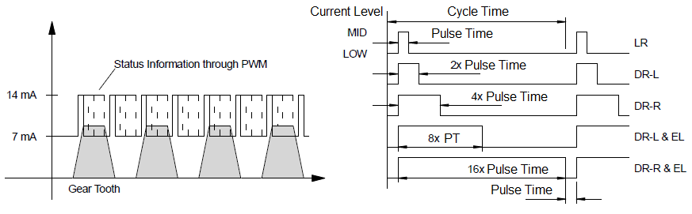
PWM Diagram
A “zero speed” or “stand still” indication is usually done with pulses of 32 x pulse time length and with an appropriate large gap (Cycle time = 0.5 – 2 [ms]). When the cycle time is smaller than the basic pulse width, the pulse is truncated. When the cycle time has elapsed, a low pulse with the length of the pulse time will be sent, followed by the next high pulse.
AK-Protocol or VDA
AK-Protocol or VDA uses three current levels and transmits a 9-bit status word after the Speed Pulse. The VDA encoding starts with a “Speed Pulse” with a High current level, followed by a short gap, and the Manchester-encoded protocol bits with Mid current levels.
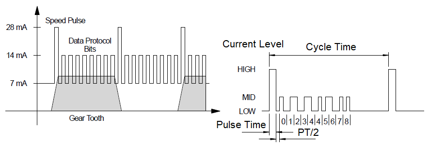
AK-Protocol / VDA Diagram